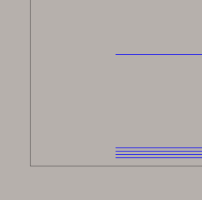

<div id="numberOfFinishingStepdowns"><p>工具のボトムを使った仕上げパスの数です。</p>
<table class="tipTable" cellspacing="10">
<tr>
<td><center></center></td>
</tr><tr>
<td><center><p><b>3 つの仕上げパスで表示</b></p></center></td>
</tr></table>
</div>